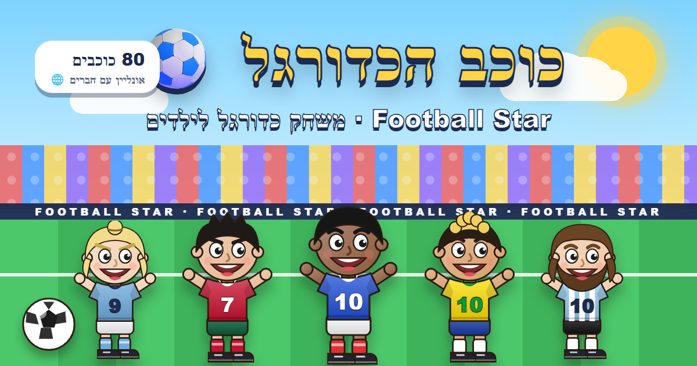

מעבדת המשחקים של לופו · בחינם, בדפדפן, בלי התקנה

משחק כדורגל 1 על 1: 96 כוכבים, אונליין עם חברים, פנדלים, ארנות, מועדונים ותיבות.
שחק ▶מעבדת משחקים (Game Lab) היא האתר של לופו, ילד שבונה משחקים. המשחק הראשון הוא כוכב הכדורגל – משחק כדורגל לילדים שמשחקים בדפדפן, בחינם ובלי התקנה: כדורגל 1 על 1 מול המחשב, כדורגל אונליין עם חברים, משחק פנדלים, 96 כוכבי כדורגל, ארנות, מועדונים, תיבות ואוסף מראה. מחפשים "לופו כדורגל", "המשחק של לופו" או "משחק כדורגל חינם"? זה כאן. עובד גם בטלפון, בעברית, אנגלית, ערבית ורוסית.
Football Star · ערוץ העדכונים בוואטסאפ 📣